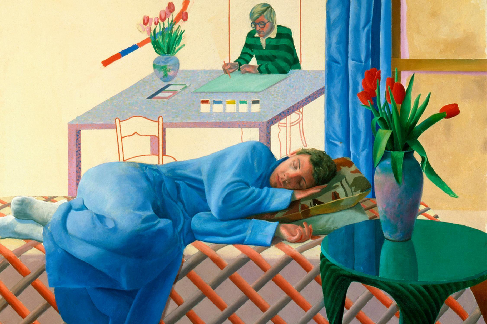

“I was never much of a party boy. I didn’t mind being seen that way, but I am actually a worker. An artist can approve of hedonism, but he can’t be a hedonist himself.”
What about all those LA swimming pools, the naked young men and the atmosphere of sunny indolence? The best-known art seems to reflect the happy excesses of the good life, a Californian bohemia. Ah, yes, he says, he did live in bohemia, but that didn’t dampen his Victorian work ethic: you can take the boy out of Bradford, etc. “I thought I was a hedonist at the time, but when I look back I was always working. I am always working. I work every day. I never give parties; I never gave them.” These days, when his team come round to his LA home in the evening (friends, assistants, former lovers – often all three in one), he leaves them to it. He unplugs his hearing aids and is in bed by 9pm.

Hockney has a fag in one hand, a mug of tea in the other, fish and chips and mushy peas in front of him, and he is surrounded by his own work. Hockney has a fag in one hand, a mug of tea in the other, fish and chips and mushy peas in front of him, and he is surrounded by his own work. If this were a painting, it might be called The Artist In His Element.
We are at his home in Kensington, where Hockney sits under a series of framed self-portraits in all manner of moods, all of them finger-painted on his iPad. He looks a little frail today. He has recently arrived from Los Angeles, where he spends most of his time. Yesterday he was jetlagged and bedbound, and today he’s getting his head back together. He’s surrounded by a team of assistants and friends who tend to him discreetly and lovingly – bringing in the fish and chips, filling his empty cup with more tea, fetching him a beer. As we sit down together, they leave the room; Hockney has been going deaf for 40 years, and has hardly any hearing left. The only way he can conduct a proper conversation these days is without background buzz.
Annely Juda Fine Art
23 Dering Street, London W1S 1AW, England
Tel: (44) 20-7629-7578
Fax: (44) 20-7491-2139
email: ajfa@annelyjudafineart.co.uk
www.annelyjudafineart.co.uk